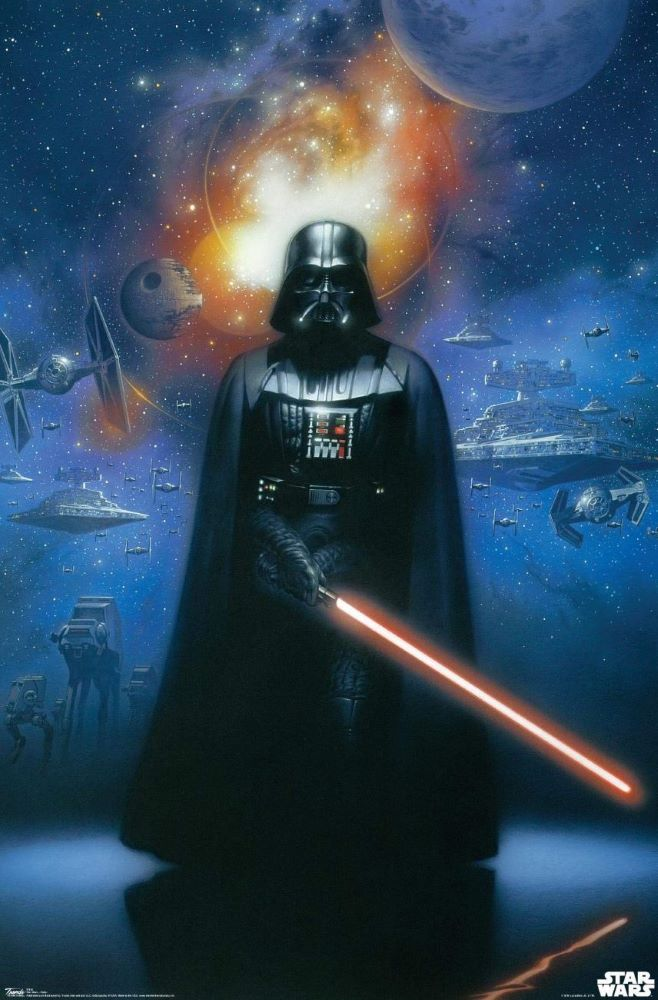

StarWiki is your indispensable guide to the Star Wars galaxy, designed to cater to the needs of both ardent fans and newcomers. In the vast and intricate universe of Star Wars, many have been entranced by the timeless battles of Jedi and Sith, the memorable characters, and the enduring struggle between good and evil. However, for those just setting foot into this expansive galaxy, the sheer volume of content can be overwhelming. Where do you start? What's the best order to watch the movies? Who are these characters, and what makes them tick? These are the questions that StarWiki seeks to answer. For seasoned fans, we offer a trove of hidden gems and behind-the-scenes insights. For newcomers, we provide a welcoming gateway into this captivating universe, making the Star Wars experience accessible and enjoyable for all.

As well, for newcomers, the prospect of diving into the vast sea of Star Wars content can be intimidating. That's where StarWiki comes to the rescue. Our mission is to help you plan a fulfilling Star Wars journey, ensuring that you don't miss out on any of the key moments or iconic characters that have defined this beloved franchise. By offering a structured approach to experiencing Star Wars, we aim to make the process enjoyable and comprehensive. Whether you're a family introducing your children to the wonders of the galaxy far, far away or an individual looking to embark on your first viewing, our website is your trusty companion in this epic adventure.
Finally, the Force is at the heart of the Star Wars saga. It's not just a source of power for the Jedi and Sith; it's a philosophical cornerstone that delves into the eternal struggle between light and dark, good and evil. StarWiki takes you on a journey into the mythology of the Force, exploring its origins, practices, and the profound impact it has on the characters and stories. Through detailed articles, we examine the teachings of the Jedi, the seduction of the dark side, and the broader implications of the Force in the Star Wars galaxy. Whether you're seeking to understand the nature of Anakin Skywalker's fall from grace or the significance of Luke Skywalker's training, our resources are here to provide clarity and depth.